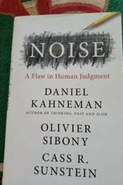

Library › Psychology & People
Noise — Summary & Key Lessons

The hidden flaw in human judgement — not bias, but noise: wrongness that varies randomly.
📖 OPEN THE FULL INTERACTIVE BREAKDOWN →🌐 Read it in Hindi, Hinglish, Gujarati, Tamil & 22 more languages — free, with audio.
💡 The Big Idea
Bias is the average of our errors; noise is the scatter — and it is often the bigger problem. The same case gets different sentences from different judges, different prices from different appraisers, different diagnoses from different doctors. Because noise hides in plain sight (each judgment looks reasonable alone), it is harder to see than bias. The trio's remedy: decision hygiene — independent judgements first, aggregated second, structured scales, and 'noise audits'.
🧠 The 9 Key Lessons
Lesson 1: Bias vs. Noise: Two Forms of Error
Chapter 1: The Illusion of Agreement
A famous demonstration: judges' sentences varied wildly for identical cases — that scatter is noise. Bias moves a team in one direction; noise spreads it randomly. The book's key insight: teams obsess over bias while noise quietly does equal damage, because every individual judgment seems reasonable in isolation. Only the aggregate reveals the scatter.
📖 Example: Four underwriters quote the same risk at 20% to 80% different prices — each looks expert; the range is noise. Read the full example →
⚡ Do this: Run one mini noise audit: get three independent estimates of one judgment you made this month.
Lesson 2: System Noise: The Same Person, Different Days
Chapter 2: The Weather Inside
Judges differ from other judges — and from themselves: the same judge's severity shifts after a meal, a win, even the weather in one famous study. The 'system noise' revelation is humbling: we are not stable instruments. Stable routines, checklists and taking the judgment at your best hour are hygiene against your own weather.
📖 Example: Grant decisions made before lunch are systematically different from those made after — same reviewer, different state. Read the full example →
⚡ Do this: Move your highest-stakes judgments to your peak state — and never judge when hungry, rushed or angry.
Lesson 3: The Wisdom of Independent Aggregation
Chapter 3: The Crowd Within
The single most useful technique in the book: before hearing others, make your own judgment; then aggregate. Independence is the magic ingredient — group discussion destroys independence and amplifies confidence without improving accuracy. Even one's own first estimate matters: averaging your first and second estimates beats either alone.
📖 Example: The 'delphi' method — separate estimates, then averaged — repeatedly beats committee discussion. Read the full example →
⚡ Do this: In your next group decision, collect written estimates individually BEFORE the meeting — then discuss the range.
Lesson 4: Structured Judgment: What Are the Criteria?
Chapter 4: Decision Hygiene
The trio's prescription: replace free-form judgment with structured assessment — define criteria, score each independently, use relative rankings, and avoid 'nothing is wrong' conclusions by testing for the opposite. It is the mechanical check: a decision that survives a checklist is usually better than one that survives charisma.
📖 Example: Hiring committees that score candidates on defined criteria pick better — and more diversely — than those that 'just know'. Read the full example →
⚡ Do this: Write 4-6 explicit criteria for your next important choice and score options before discussing.
Lesson 5: The Process Test: Judge the Method, Not the Outcome
Chapter 5: Noise in Organizations
Because outcomes are noisy, the only fair audit of a decision is the decision process — did it consider the base rate, seek independent views, use criteria, and resist the vivid story? Organisations that reward good outcomes alone breed noise and superstition; those that reward good process reduce both.
📖 Example: The football coach fired after a bad-luck season teaches the team to fear process, not to improve it. Read the full example →
⚡ Do this: After each big decision, log one line: what process was used, and what would we do the same next time?
Lesson 6: Noise in Organizations: The Hidden Tax
Chapter 8: The Scandal of Noise
Kahneman's most practical discovery: professional judgments vary wildly — the same case gets different sentences, diagnoses and underwriting decisions from different professionals, and the scatter is far larger than anyone estimates. No organization measures it, and what is not measured is not managed — so noise is a hidden tax on every system staffed by humans.
📖 Example: Two judges gave wildly different sentences for near-identical cases — not one was biased, both were noisy; the system quietly ran on chance. Read the full example →
⚡ Do this: Run one recurring decision past two people this month; the difference between their answers is your noise tax — then design a rule to shrink it.
Lesson 7: The Error Equation: Bias + Noise
Chapter 1: The Two Errors
Kahneman's headline insight: error = bias + noise. Bias is the systematic miss (the scale that always reads heavy); noise is the scatter (the same scale giving different readings on different days). We obsess over bias and ignore noise — but in most human judgment, noise is the bigger component, and it is invisible because we never see the same person judge the same case twice.
📖 Example: Two judges give the same case 5 years and 15 years — that's noise, not bias, and courts almost never measure it. Read the full example →
⚡ Do this: Where do you judge repeatedly — hiring, pricing, grading? Get three of your own past judgments on similar cases and look at the spread.
Lesson 8: Groupthink's Quiet Brother: Noise in Teams
Chapter 4: Noise in Groups
Teams are supposed to average out error, but they amplify it: the first speaker anchors the room, the loudest voice sets the frame, and conformity pressures the rest. The result is not wisdom — it is correlated noise, the opposite of what a team is for. The fix is mechanical, not cultural: independent judgment first, then aggregation, with the group voting before anyone speaks.
📖 Example: The 'asynchronous estimate' pattern — each member writes a number privately, then the group sees the range — beats the open-room discussion almost every time. Read the full example →
⚡ Do this: Before your next team decision, collect everyone's answer in writing FIRST, reveal all, then discuss. One small ritual, big noise reduction.
Lesson 9: The Noise Audit: Measuring Your Own System
Chapter 8: The Science of Judgment
Noise's most practical chapter: you can measure your own judgment noise with a simple audit — take ten past cases, and ask your best expert to rate the same cases again, blind. The spread between the two ratings is your noise level. Most people are shocked by the result; nobody has ever been shocked INTO accepting noise. The message: what gets measured can be reduced.
📖 Example: Insurance adjusters re-rate the same claims months later and find differences of 20-40% — in institutions with decades of experience. Read the full example →
⚡ Do this: Run a mini-audit: re-score three decisions you made last month, blind. If the scores differ, build a rubric before the next one.
✅ 5-Step Action Plan
- Run one three-person noise audit monthly.
- Judge only in your peak state; never when depleted.
- Collect independent written estimates before any discussion.
- Use a written criteria checklist for big choices.
- Post-mortem the process, not just the outcome.
⚠️ When This Doesn't Work
Noise sits on contested statistics; some 'system noise' findings (like the lunch effect) have failed replication. The core suggestion — independent judgments, structured criteria, aggregate — is robust regardless.
💀 The Graveyard Proves It
📊 The Credit Rating Agencies — The Triple-A Stamp That Helped Sink the World. Burn: >$3 trillion of 'AAA' debt that defaulted; $2.2B+ in U.S. settlements Read the full case study →
💬 Best Quotes from Noise
- “Wherever there is judgment, there is noise — and you can often do more about it than you think.”
- “Noise is the unwanted variability in judgments that should be identical.”
- “The quality of a decision is judged by the process, not by the outcome.”
Interactive version: mark lessons as read, listen in your language, share quote cards.